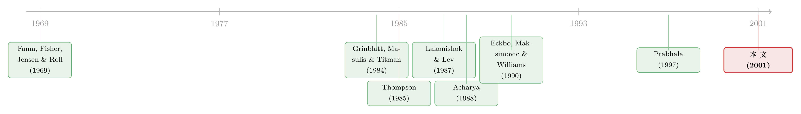

拆股的那 2.1%，到底有多少是「股利」给的？
本文读的是 Nayak & Prabhala (2001, Review of Financial Studies)：拆股公告平均带来约 2.1% 的正向股价反应，民间智慧说这全是「拆股暗示要加股利」闹的；但作者用一套条件事件研究法把这块反应拆成「股利成分」和「非股利成分」，发现其中约 46% 根本无法归因于股利信息——拆股和股利只是部分的信息替代品。
1 一桩老掉牙、却始终没算清的账
先说一件几乎所有公司金融教科书都会讲、却又讲不透的怪事。
一次 拆股 (stock split)，本质上什么都没改变。它只是把现有的股份切得更碎——原来一股，现在两股，每股的「分量」减半。公司的现金流没变，投资项目没变，资本结构也没变。按 Brealey 和 Myers 教科书 (1991, p.302–303) 的说法，这种纯粹「化妆式」的操作，对公司价值应当毫无影响。
可现实偏不。自 Fama, Fisher, Jensen, and Roll (1969)——下文沿用作者的简称 FFJR——那篇开创性的论文起，一代又一代研究者反复记录到：拆股伴随着正向的股价反应。本文的样本就摆在那里：1985 到 1994 年间，超过 70% 的拆股对应着正的股价反应，所有拆股公告的平均效应高达 2.1%。
一个什么都没改变的动作，凭什么值 2.1%？
这就是过去半个世纪финance 里悬而未决的「拆股之谜」。
2 两个学派，与一个谁都没回答的问题
围绕这 2.1%，解释大致分成两派。
第一派把功劳记在股利头上。FFJR 写得很直白：拆股前几个月那些「异常高」的收益，「反映了市场对股利将大幅增加的预期」；而且「一旦把股利变化的信息效应考虑进去，拆股本身的价格效应就会消失」。换句话说，拆股不过是「我们要加股利了」的一道前奏。
第二派则坚持拆股有它自己的、与股利无关的价值。Lakonishok and Lev (1987) 说拆股把股价拉回一个「最优交易区间」；Grinblatt, Masulis, and Titman (1984)——下文简称 GMT——说拆股能给一只股票招来更多「注意力」，从而触发重新定价；Lamoureux and Poon (1987) 说拆股后特质波动率上升、抬高了「税收期权」价值；Muscarella and Vetsuypens (1996) 研究 ADR 的「单独拆股」，认为是流动性改善在起作用。
这两派并不互斥。拆股的公告效应完全可能同时来自将来要加的股利、以及「回到最优区间」「招来注意力」这些非股利因素。真正棘手的不是「哪一派对」，而是——这 2.1% 里，股利占几成，非股利占几成？
这才是这篇论文要回答的问题。而在它之前，几乎没人能把这笔账拆开。
接着，一个自然的问题是：为什么这么难拆？
3 难点：拆股从来不是「单独」公布的
难就难在一个让人头疼的现实：拆股和股利，常常是一块儿宣布的。
作者发现，在派息公司里，约 80% 的拆股是和股利公告同时宣布的；而且这些同时公告中，有 97% 是在拆股前后一天之内宣布股利的。这就成了经典的 联合公告问题 (joint announcement problem)：你看到的那个股价反应，到底是拆股引起的，还是随之而来的加息股利引起的？两者搅在一起，没法直接分开。
于是过去的文献怎么办？绕着走。大家只挑那些「纯」拆股——没有同时伴随股利公告的样本——来研究。可作者一针见血地指出：这条路根本绕不开问题。哪怕一家公司只宣布了拆股、没碰股利，市场照样会从拆股里推断出它将来可能加股利。这份推断同样会「污染」所谓「纯」拆股的公告效应。
所以「只看纯拆股」并不能解决联合公告问题。无论股利是否被正式一同宣布，拆股当天的股价反应里，都掺着市场对「这次拆股暗示了什么股利」的猜测。
那真正关键的一步在于什么？不要再丢弃联合公告样本了。反过来——把那 80% 被大家当成「不可分析」而扔掉的数据捡回来，显式地把其中的股利信息建模、并控制掉，剩下的那一块就是拆股自己的贡献。这正是本文方法论上的核心野心。
而要做到这一点，作者依赖的工具，是 条件事件研究法 (conditional event-study methods)。
4 识别策略：把「公告」当成一道自选择难题
要理解这套方法，得先换一个视角看「公告」这件事。
标准事件研究法 (event study) 默认事件是「外生」掉到公司头上的。但拆股不是天上掉的——是公司自己选要不要拆。这一选，就藏着公司的私有信息：一家决定拆股的公司，多半是因为它知道一些外人不知道的好消息。这正是 条件事件研究法 与标准方法的根本区别：它把「公司为什么选择这个事件」明确写进模型，再据此推断公告揭示了多少私有信息。
4.1 第一步：把拆股决策写成一个 probit
作者先给拆股决策立一个统计模型。设公司 \(i\) 在一个潜变量 \(\text{SPL}_i\) 为正时宣布拆股，这个变量可理解为「拆股的净收益」。它的一部分是市场事先能从公开变量 \(X_{si}\)（比如高名义股价、近期股价大涨）里看出来的，另一部分 \(\psi_{si}\) 是公司的私有信息：
$$\text{SPL}_i = \theta_s X_{si} + \psi_{si}$$
公司在 \(\text{SPL}_i > 0\) 时宣布拆股：
$$\text{SPL}_i = \theta_s X_{si} + \psi_{si} > 0$$
这里 \(E(\psi_{si})\) 在公告前的期望被无损地设为零。
关键的洞察来了：拆股这个动作本身，泄露了公司私有信息的一部分。看到拆股，市场就知道 \(\theta_s X_{si} + \psi_{si} > 0\)，等价于 \(\psi_{si} > -\theta_s X_{si}\)。于是市场可以据此修正对 \(\psi_{si}\) 的预期。这份「修正后的条件期望」，就是拆股真正揭示的信息。如果拆股有正向价值效应，公告效应就该和它揭示的信息正相关：
$$E(AR_i \mid S) = \gamma_s + \beta_s\, E(\psi_{si} \mid \theta_s X_{si} + \psi_{si} > 0)$$
这就是公式 (3)：给定公司特征 \(X_{si}\) 的条件公告效应。
4.2 用这一个回归，同时检验两个假说
回到第 2 节没解决的那个 GMT 谜题：为什么非派息 (ND) 公司的拆股公告效应，比派息 (D) 公司更高？作者提出两个候选解释，并且漂亮的是——它们都能在公式 (3) 里被检验。
「差异化预期」假说 (differential expectations)。 ND 公司往往更年轻、更不稳定，因而事前更不像会拆股的公司。一旦它拆了，市场更意外，反应自然更大。检验方法：看 \(\theta_s X_s\) 是不是 D 公司更高。
「信息替代」假说 (informational substitute)。 这是全文的灵魂。派息公司早已建立了一套向股东传递现金流信息的机制——定期股利。如果拆股决策也（至少部分地）取决于同样的未来现金流信息，那么拆股里的信息就有一部分已经被股利这条渠道说过了。于是对派息公司而言，同样一单位拆股信息，应该激起更弱的股价反应。检验方法：比较派息公司的斜率 \(\beta_{s,d}\) 和非派息公司的 \(\beta_{s,nd}\)。若信息替代成立，应有
$$\beta_{s,d} < \beta_{s,nd}$$
——一单位拆股信息，对 ND 公司的冲击更猛。
这套设计的精巧之处在于：它在控制了公司特征系统性差异（通过 \(\theta_s\) 对 D/ND 分别估计）和拆股预期之后，把「替代」从「预期差异」里干净地分了出来。这正是简单比较两组公告效应做不到的事。
（关于「公司自选择事件、再从中反推私有信息」这套思路，更早一篇用条件方法重估并购价值的文章可参见《do-tender-offers-create-value-new-methods-and-evidence》；而拆股本身导致市场反应迟缓的另一面，可参见《拆股这件「小事」，凭什么让市场慢了整整一年？》。）
5 真正的拆解：把那 2.1% 切成两半
第二组检验，是本文最硬核的部分——只看派息公司，把它们的拆股公告效应显式地切成「股利成分」和「非股利成分」。
5.1 给股利决策也立一个模型
公司不仅选要不要拆，还同时选一个伴随的股利决策。设股利决策由潜变量 \(\text{DIV}_i\) 支配：
$$\text{DIV}_i = \theta_d X_{di} + \psi_{di}$$
其中 \(\theta_d X_{di}\) 是市场事先知道的部分，\(\psi_{di}\) 是公司的私有信息。公司从 \(\{I, U, D\}\)（增、不变、减）里选一个，用一个 有序 probit (ordered probit) 刻画：
$$I \Leftrightarrow \text{DIV}_i > \mu_I$$ $$U \Leftrightarrow \mu_D \le \text{DIV}_i \le \mu_I$$ $$D \Leftrightarrow \text{DIV}_i < \mu_D$$
信息够好就加息，够差就减息，中间地带就维持不变。于是同时宣布拆股 \(S\) 和股利决策 \(C\) 的公司，其联合公告效应可写成：
$$E(AR_{sdi} \mid C, S) = \gamma_{sd} + \beta_d\, E(\psi_{di} \mid C, S) + \beta_s\, E(\psi_{si} \mid C, S)$$
这就是公式 (6)，全文的「主力机器」。它的妙用在于：如果在控制了伴随股利的信息（那个 \(\beta_d\) 项）之后，\(\beta_s\) 仍然显著为正，就说明拆股在股利之外还有自己的信息含量——拆股的价值效应不能全赖到股利头上。
5.2 一个相关系数，还不够
但「\(\beta_s\) 显著」只告诉我们拆股有增量信息，没告诉我们股利成分到底占几成。要回答「是 5% 还是 95%」，需要再加一层结构。
作者的做法是把拆股信息 \(\psi_{si}\) 本身分解成股利相关和股利正交两块：
$$\psi_{si} = \rho_{sd}\, \psi_{di} + \psi_{s-d,i}$$
其中 \(\rho_{sd}\,\psi_{di}\) 是拆股信息里「与股利重合」的部分，\(\psi_{s-d,i}\) 是与股利正交的「纯拆股」信息。目标，就是把后者对应的那块公告效应抠出来。
市场对这两块各有反应，记为 \(\alpha_{s-d}\) 和 \(\alpha_d\)。在 \(\psi_{si} = \rho_{sd}\psi_{di} + \psi_{s-d,i}\) 与 \(\psi_{di}\) 均服从标准正态的假设下（这是限值因变量文献里估计 双变量 probit (bivariate probit) 的标准假设），作者推出了全文最核心的一个等式：
这个公式 (10) 的直觉非常顺。它说：股利成分什么时候更重要？当 \(\rho_{sd}\) 高（拆股和股利信息高度相关）、\(\alpha_d\) 高（每单位股利信息对股价冲击大）、而 \(\alpha_{s-d}\) 低（每单位纯拆股信息没那么值钱）的时候。
特别值得一提的是那个反向的拉扯：\(\rho_{sd}\) 越大，拆股信息里的股利成分 \(\rho_{sd}\psi_{si}\) 越多，但纯拆股成分 \(\psi_{s-d,i}\) 反而越少（因为它的方差等于 \(1 - \rho_{sd}^2\)）。极端地看——
$$\rho_{sd} \to 1 \Rightarrow (1 - \rho_{sd}^2)\,\alpha_{s-d}\,\psi_{si} \to 0$$ $$\rho_{sd} \to 0 \Rightarrow \rho_{sd}\,\alpha_d\,\psi_{si} \to 0$$
这里藏着全文一个最容易被忽略、却极重要的方法论点：光看拆股和股利潜变量之间的相关系数 \(\rho_{sd}\)，并不足以判断两者谁更重要。 你还必须同时知道两个 \(\alpha\)——每种公告的信息「单价」。相关性高，未必意味着股利就解释了大头。
5.3 怎么把这些参数估出来
最后是估计。从公式 (11) 出发，作者把联合公告效应重写为：
$$E(AR_{sdi} \mid C, S) = (\alpha_d - \rho_{sd}\,\alpha_{s-d})\,E(\psi_{di} \mid C, S) + \alpha_{s-d}\,E(\psi_{si} \mid C, S)$$
对照公式 (6)，立刻得到 \(\beta\) 与 \(\alpha\) 的换算：\(\alpha_{s-d} = \beta_s\)，以及 \(\alpha_d = \beta_d + \rho_{sd}\,\alpha_{s-d}\)。
实操流程是这样三步走：
- 对公司的拆股 / 股利决策估一个 双变量 probit，得到 \(\theta_s, \theta_d, \rho_{sd}\)；
- 用它们算出公式 (6) 右侧的条件期望——注意，这里要的不是标准选择模型里那个单变量的 逆米尔斯比率 (inverse Mills ratio)，而是同时对「拆股」和「股利」两个决策取条件的双变量逆米尔斯比率，形如 \(E(z \mid z_1 > (\le)\mu_1,\, z_2 > (\le)\mu_2)\)，作者在附录里给出了推导；
- 把联合公告效应 \(AR_{sdi}\) 对这两个生成回归元做 OLS，得到 \(\beta_d, \beta_s\)，再换算回 \(\alpha\)。标准误需按 Heckman (1979) 的思路修正，因为回归元是「生成变量」。
绕了一大圈，落点只有一句话：用这套机器跑出来，拆股公告效应里约 46% 来自与股利正交的信息。 也就是说，对派息公司而言，拆股和股利确实是信息替代品——但只是部分替代。那 2.1% 里，将近一半，是股利怎么也解释不掉的「纯拆股」价值。
6 数据
数据来自芝加哥大学 CRSP 日度主文件。作者把 CRSP 里代码为 5523 的拆股识别出来，主样本是 1985–1994 年；同时对 1975–1984 年做了复制，结论定性一致。
公司被分成两类：在拆股当天及前一年都没有股利公告的，记为非派息 (ND)；其余记为派息 (D)。D 公司又进一步分成「拆股时同时宣布股利」和「没有同时宣布」两组——这里「同时」定义为拆股前后 10 天窗口内有股利公告。前面提到的 80%、97% 两个数字，就出自这一步分类。此外，作者还收集了拆股前后一季度和四季度的「前置」与「后续」股利，以及两批未拆股公司（一批是当年没拆股的派息公司，一批是非派息公司）作为对照，来估计那个决策 probit。
观测单位是「一次拆股公告」。
7 文献脉络
把这条线捋一捋，会看到一个很清晰的「问题—工具」交替演进的故事。
起点是 FFJR (1969)。 它既记录了拆股的正向价值效应，又第一个把它归因于「市场预期股利要涨」。这一句论断，奠定了往后三十年争论的整个战场。
接着是 GMT (1984)。 这是 FFJR 之后对拆股最细致的分析，记录了那个一直没人解释清楚的事实——非派息公司的拆股公告效应更高。本文第一组检验，就是冲着这个谜题去的。
然后，第二派的非股利解释陆续登场：Lakonishok and Lev (1987) 的最优交易区间、Lamoureux and Poon (1987) 的税收期权、McNichols and Dravid (1990) 的信号模型、Muscarella and Vetsuypens (1996) 的流动性。战场越来越热闹，但「股利占几成」始终没人算得出。
但真正让本文能动手的，是另一条暗线——条件事件研究法的工具积累。 从 Thompson (1985) 提出把收益生成过程条件在公司特定事件上，到 Acharya (1988) 的双离散信号模型、Eckbo, Maksimovic, and Williams (1990) 的横截面一致估计，再到 Prabhala (1997)（本文作者之一）为「标准事件研究法何时仍然有效」给出的均衡导向论证——这套方法逐渐成熟。

于是反转出现：本文站在这两条线的交汇处——用条件事件研究法这把新工具，去回答 FFJR 留下的老问题。 它的位置不只是「又一篇拆股论文」，而是示范了如何把过去被当成「不可分析」的联合公告样本，变成可以拆解的金矿。
8 评论与延伸（Q&A + 研究方向）
(a) 几个可能的疑问
Q：「信息替代」和「差异化预期」到底有什么区别？听起来都是说 ND 公司更让人意外。
不一样，区别在「意外」的来源。差异化预期说的是 ND 公司事前更不像会拆股（\(\theta_s X_s\) 更低），所以拆了更突然——这是「发生概率」层面的意外。信息替代说的是即便控制住了拆股概率，ND 公司每一单位拆股信息也更新鲜（\(\beta_{s,nd} > \beta_{s,d}\)），因为它没有股利这条平行渠道替它提前说过——这是「信息单价」层面的差别。本文的设计能把两者分开，正是它超越 GMT 的地方。
Q：那个 46% 可信吗？会不会高度依赖正态假设？
诚实地说，这是它最脆弱的地方。整套分解建立在 \(\psi_{si}\) 与 \(\psi_{di}\) 服从（二元）标准正态的假设上，逆米尔斯比率的具体形式、乃至 \(\alpha\) 的换算，都从这个分布假设里来。换一个分布，
46%这个点估计完全可能漂移。它的价值更多在于「拆股有相当大一块非股利信息」这个定性结论，而非这个小数点本身。
Q：为什么不干脆只用「纯拆股」样本，省得跟股利纠缠？
因为作者证明了这条路是假的捷径。哪怕一家公司只宣布拆股、绝口不提股利，市场照样会从拆股里推断出未来的股利变化，这份推断同样污染了「纯」拆股的公告效应。换言之，联合公告问题不是「选样本」能躲开的，必须正面建模、显式控制。这恰恰是本文方法论上的主张。
Q：\(\rho_{sd}\) 很高，是不是就说明股利解释了大部分？
不能这么推。这是公式 (10) 最反直觉的一点：\(\rho_{sd}\) 高意味着股利成分的「占比权重」大，但同时纯拆股成分的方差 \(1 - \rho_{sd}^2\) 在缩小。要判断谁更重要，还得知道两个 \(\alpha\)——也就是每单位拆股信息和每单位股利信息分别对股价值多少钱。只看相关系数会得出错误结论。
Q：这套方法只能用在拆股上吗？
不。作者特意强调它的「方法论可移植性」。任何「公司自选择某个事件、且该事件常与另一个公告捆绑出现」的场景，原则上都能套这套双变量 probit + 双变量逆米尔斯比率的框架。回购与股利、增发与投资公告、并购与融资方式，都是潜在的应用场。这也是本文发在 RFS 而非纯实证期刊的原因之一。
Q：拆股本身真有「实质」价值吗，还是纯心理？
本文不直接回答机制，它只负责把那
46%量出来、并确认它不是股利。至于这块非股利价值究竟来自最优交易区间、注意力、税收期权还是流动性，本文保持中立——它把「是不是股利」和「具体是什么非股利机制」这两个问题干净地分开了，后者留给了别人。
(b) 几个可能的研究问题与提案
1. 把这套分解搬到「回购 + 股利」上。 【经济故事】回购与股利同为派现渠道，常被一起讨论「替代还是互补」。若回购公告里也有一块与股利正交的信息，能否同样量化？这正好接续派现政策那条争论。 【可行性】高。CRSP/Compustat 有回购与股利公告，双变量 probit 框架可直接平移，识别策略现成。难点在回购「宣布 ≠ 执行」，需处理执行不确定性。
2. 用更现代的高频数据，把「拆股当天」拆到分钟。
【经济故事】本文用日度收益，联合公告问题部分源于「同一天」无法分辨。若拆股和股利在日内不同时点公布，分钟级数据或许能直接观测到两段反应。
【可行性】中。需 TAQ 或类似日内数据，且要找到拆股与股利在日内确实错时公布的子样本——97% 在一天内宣布，可能错时的窗口很窄，样本量是硬约束。
3. 把信息替代假说迁移到信用市场：发债与股利的替代。 【经济故事】对债权人而言，公司同时传递现金流信息的渠道也不止一条。一家既定期派息、又频繁发债的公司，其发债公告的信息含量是否被股利「替代」掉一部分？这对理解公司债的信息环境有意义。 【可行性】中。需要债券公告日的价格反应（如 TRACE 时代的公司债），以及发债 / 股利的联合决策建模。识别上要小心债券价格反应本身的流动性噪声。
4. 外资持有人会改变「信息替代」的强度吗？ 【经济故事】如果外资持有人对股利信号的解读与本地投资者不同，那么同一家公司在外资持股高 / 低时，拆股的非股利成分占比可能不一样。这能把「46%」从一个常数变成一个随股东结构变化的量。 【可行性】中偏低。需跨国或跨时的外资持股数据匹配拆股事件，样本拼接成本高，且拆股在很多市场并不普遍，外部有效性存疑。
5. 重估那个 46% 对分布假设的敏感性。
【经济故事】既然点估计高度依赖正态，一个直接的贡献就是：换用半参数 / 非参数的选择模型，看 46% 这个数字稳不稳。
【可行性】高。纯方法论复制，数据可用 CRSP 原样重建，识别风险低，属于「可立即动手」的稳健性检验类工作。
9 我的判断
贡献。 这篇论文真正的分量不在那个 46%，而在它示范了一种思维方式：当事件是公司自己选的、又总与别的公告捆在一起时，与其丢弃「脏」样本，不如把污染源显式地建模、控制、再分解。把过去被当成「不可分析」的 80% 联合公告样本变成可用数据，这是方法论上实打实的推进。公式 (10) 那个「相关系数不足以判断相对重要性、必须同时看 \(\alpha\)」的洞察，更是会让很多想当然的人停下来重想一遍。
对识别的担忧。 最大的软肋是分布假设。整套分解吊在二元正态这根线上，逆米尔斯比率、\(\alpha\) 的换算、乃至 46% 的点估计都由它而来——换个分布，数字大概率会动。其次，决策 probit 里 \(X_s\)、\(X_d\) 的选取（用什么公开变量去刻画「市场事先预期」）本身有相当的自由度，预期模型设错，「私有信息」 \(\psi\) 就会被污染，进而把非股利成分高估或低估。生成回归元的标准误虽按 Heckman (1979) 修正了，但两阶段误差传导在小样本里仍值得警惕。
后续想看到什么。 第一，对 46% 做一次彻底的分布稳健性体检——这是最该补、也最容易补的一刀。第二，把那块「非股利成分」继续往下拆：它到底是注意力、流动性，还是交易区间？本文把「是不是股利」回答得很干净，却把「那它究竟是什么」整个留白了。第三，在更现代、信息环境更丰富的样本（乃至信用市场）里重做一遍，看「拆股仍有近半信息无法归因于股利」这个结论，在今天是否依然成立。
参考文献
Acharya, S. (1988). A Generalized Econometric Model and Tests of a Signaling Hypothesis with Two Discrete Signals. Journal of Finance 43, 413–429.
Brealey, R. A., and S. C. Myers (1991). Principles of Corporate Finance, 4th ed. McGraw-Hill, New York.
Eckbo, E., V. Maksimovic, and J. Williams (1990). Consistent Estimation of Cross-Sectional Models in Event-Studies. Review of Financial Studies 3, 343–365.
Fama, E. F., L. Fisher, M. C. Jensen, and R. Roll (1969). The Adjustment of Stock Prices to New Information. International Economic Review 10, 1–21.
Grinblatt, M. S., R. W. Masulis, and S. Titman (1984). The Valuation Effects of Stock Splits and Stock Dividends. Journal of Financial Economics 13, 461–490.
Heckman, J. (1979). Sample Selection Bias as a Specification Error. Econometrica 47, 153–161.
Lakonishok, J., and B. Lev (1987). Stock Splits and Stock Dividends: Why, Who and When. Journal of Finance 42, 913–932.
Lamoureux, C. G., and P. Poon (1987). The Market Reaction to Stock Splits. Journal of Finance 42, 1347–1370.
McNichols, M., and A. Dravid (1990). Stock Dividends, Stock Splits and Signaling. Journal of Finance 45, 857–879.
Muscarella, C., and M. Vetsuypens (1996). Stock Splits: Signaling or Liquidity? The Case of ADR 'Solo-Splits'. Journal of Financial Economics 42, 3–26.
Nayak, S., and N. R. Prabhala (2001). Disentangling the Dividend Information in Splits: A Decomposition Using Conditional Event-Study Methods. Review of Financial Studies 14(4), 1083–1116.
Prabhala, N. R. (1997). Conditional Methods in Event-Studies and an Equilibrium Oriented Justification for Using Standard Event-Study Procedures. Review of Financial Studies 10, 1–38.
Thompson, R. (1985). Conditioning the Return Generating Process on Firm-Specific Events: A Discussion of Event-Study Methods. Journal of Financial and Quantitative Analysis 20, 151–168.